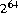

if the argument is negative; otherwise, it equals the argument.
if the argument is negative; otherwise, it equals the argument.java.lang.Longpublic final classLongextends Number { public static final longMIN_VALUE= 0x8000000000000000L; public static final longMAX_VALUE= 0x7fffffffffffffffL; publicLong(long value); publicLong(String s)
throws NumberFormatException; public StringtoString(); public booleanequals(Object obj); public inthashCode(); public intintValue(); public longlongValue(); public floatfloatValue(); public doubledoubleValue(); public static StringtoString(long i); public static StringtoString(long i, int radix); public static StringtoHexString(long i); public static StringtoOctalString(long i); public static StringtoBinaryString(long i); public static longparseLong(String s)
throws NumberFormatException; public static longparseLong(String s, int radix)
throws NumberFormatException; public static LongvalueOf(String s)
throws NumberFormatException; public static LongvalueOf(String s, int radix)
throws NumberFormatException; public static LonggetLong(String nm); public static LonggetLong(String nm, long val); public static LonggetLong(String nm, Long val); }
20.8.1 public static final long
MIN_VALUE = 0x8000000000000000L;
The constant value of this field is the lowest value of type long.
20.8.2 public static final long
MAX_VALUE = 0x7fffffffffffffffL;
The constant value of this field is the highest value of type long.
20.8.3 public
Long(long value)
This constructor initializes a newly created Long object so that it represents the
primitive value that is the argument.
20.8.4 public
Long(String s) throws NumberFormatException
This constructor initializes a newly created Long object so that it represents the
integer represented by the string in decimal form. The string is converted to a
long value in exactly the manner used by the parseLong method (§20.8.17) for
radix 10.
20.8.5 public String
toString()
The long integer value represented by this Long object is converted to signed decimal
representation and returned as a string, exactly as if the integer value were
given as an argument to the toString method that takes one argument (§20.7.12).
Overrides the toString method of Object (§20.1.2).
20.8.6 public boolean
equals(Object obj)
The result is true if and only if the argument is not null and is a Long object that
represents the same long value as this Long object.
Overrides the equals method of Object (§20.1.3).
20.8.7 public int
hashCode()
The result is the exclusive OR of the two halves of the primitive long value represented
by this Long object. That is, the hashcode is the value of the expression:
(int)(this.longValue()^(this.longValue()>>>32))Overrides the
hashCode method of Object (§20.1.4).20.8.8 public int
intValue()
The long value represented by this Long object is converted (§5.1.3) to type int
and the result of the conversion is returned.
Overrides the intValue method of Number (§20.6.1).
20.8.9 public long
longValue()
The long value represented by this Long object is returned.
Overrides the longValue method of Number (§20.6.2).
20.8.10 public float
floatValue()
The long value represented by this Long object is converted (§5.1.2) to type
float and the result of the conversion is returned.
Overrides the floatValue method of Number (§20.6.3).
20.8.11 public double
doubleValue()
The long value represented by this Long object is converted (§5.1.2) to type
double and the result of the conversion is returned.
Overrides the doubleValue method of Number (§20.6.4).
20.8.12 public static String
toString(long i)
The argument is converted to signed decimal representation and returned as a
string, exactly as if the argument and the radix 10 were given as arguments to the
toString method that takes two arguments (§20.8.13).
20.8.13 public static String
toString(long i, int radix)
The first argument is converted to a signed representation in the radix specified by the second argument; this representation is returned as a string.
If the radix is smaller than Character.MIN_RADIX (§20.5.3) or larger than Character.MAX_RADIX (§20.5.4), then the value 10 is used instead.
If the first argument is negative, the first character of the result will be the character '-' ('\u002d'). If the first argument is not negative, no sign character appears in the result.
The remaining characters of the result represent the magnitude of the first argument. If the magnitude is zero, it is represented by a single zero character '0' ('\u0030'); otherwise, the first character of the representation of the magnitude will not be the zero character. The following ASCII characters are used as digits:
0123456789abcdefghijklmnopqrstuvwxyz
'\u0030' through '\u0039' and '\u0061' through '\u007a'. If the
radix is N, then the first N of these characters are used as radix-N digits in the
order shown. Thus, the digits for hexadecimal (radix 16) are 0123456789abcdef.
If uppercase letters are desired, the toUpperCase method (§20.12.36) of class
String may be called on the result:
Long.toString(n, 16).toUpperCase()
20.8.14 public static String
toHexString(long i)
The argument is converted to an unsigned representation in hexadecimal radix (base 16); this representation is returned as a string.
The result represents the unsigned magnitude of the argument. This equals the argument plus if the argument is negative; otherwise, it equals the argument.
If the unsigned magnitude is zero, it is represented by a single zero character '0' ('\u0030'); otherwise, the first character of the representation of the unsigned magnitude will not be the zero character. The following characters are used as hexadecimal digits:
0123456789abcdef
'\u0030' through '\u0039' and '\u0061' through
'\u0066'. If uppercase letters are desired, the toUpperCase method (§20.12.36)
of class String may be called on the result:
Long.toHexString(n).toUpperCase()
20.8.15 public static String
toOctalString(long i)
The argument is converted to an unsigned representation in octal radix (base 8); this representation is returned as a string.
The result represents the unsigned magnitude of the argument. This equals the argument plus if the argument is negative; otherwise, it equals the argument.
If the unsigned magnitude is zero, it is represented by a single zero character '0' ('\u0030'); otherwise, the first character of the representation of the unsigned magnitude will not be the zero character. The following characters are used as octal digits:
01234567
'\u0030' through '\u0037'.
20.8.16 public static String
toBinaryString(long i)
The argument is converted to an unsigned representation in binary radix (base 2); this representation is returned as a string.
The result represents the unsigned magnitude of the argument. This equals the argument plus  if the argument is negative; otherwise, it equals the argument.
if the argument is negative; otherwise, it equals the argument.
If the unsigned magnitude is zero, it is represented by a single zero character '0' ('\u0030'); otherwise, the first character of the representation of the unsigned magnitude will not be the zero character. The characters '0' ('\u0030') and '1' ('\u0031') are used as binary digits.
20.8.17 public static long
parseLong(String s)
throws NumberFormatException
The argument is interpreted as representing a signed decimal integer. The components
of the string must all be decimal digits, except that the first character may be
'-' ('\u002d') to indicate a negative value. The resulting long value is returned,
exactly as if the argument and the radix 10 were given as arguments to the
parseLong method that takes two arguments (§20.8.18).
Note that neither L nor l is permitted to appear at the end of the string as a type indicator, as would be permitted in Java source code (§3.10.1).
20.8.18 public static long
parseLong(String s, int radix)
throws NumberFormatException
The first argument is interpreted as representing a signed integer in the radix specified
by the second argument. The components of the string must all be digits of
the specified radix (as determined by whether Character.digit (§20.5.23)
returns a nonnegative value), except that the first character may be '-'
('\u002d') to indicate a negative value. The resulting long value is returned.
Note that neither L nor l is permitted to appear at the end of the string as a type indicator, as would be permitted in Java source code (§3.10.1)-except that either L or l may appear as a digit for a radix greater than 22.
An exception of type NumberFormatException is thrown if any of the following situations occurs:
null or is a string of length zero.
radix is either smaller than Character.MIN_RADIX (§20.5.3) or larger than Character.MAX_RADIX (§20.5.4).
radix and is not a minus sign '-' ('\u002d').
radix.
long.
parseLong("0", 10) returns 0L
parseLong("473", 10) returns 473L
parseLong("-0", 10) returns 0L
parseLong("-FF", 16) returns -255L
parseLong("1100110", 2) returns 102L
parseLong("99", 8) throws a NumberFormatException
parseLong("Hazelnut", 10) throws a NumberFormatException
parseLong("Hazelnut", 36) returns 1356099454469L
20.8.19 public static Long
valueOf(String s)
throws NumberFormatException
The argument is interpreted as representing a signed decimal integer, exactly as if
the argument were given to the parseLong method that takes one argument
(§20.8.17). The result is a Long object that represents the integer value specified
by the string.
In other words, this method returns a Long object equal to the value of:
new Long(Long.parseLong(s))
20.8.20 public static Long
valueOf(String s, int radix)
throws NumberFormatException
The first argument is interpreted as representing a signed integer in the radix specified
by the second argument, exactly as if the arguments were given to the
parseLong method that takes two arguments (§20.8.18). The result is a Long
object that represents the integer value specified by the string.
In other words, this method returns a Long object equal to the value of:
new Long(Long.parseLong(s, radix))
20.8.21 public static Long
getLong(String nm)
The first argument is treated as the name of a system property to be obtained as if
by the method System.getProperty (§20.18.9). The string value of this property
is then interpreted as an integer value and a Long object representing this
value is returned. If there is no property of the specified name, or if the property
does not have the correct numeric format, then null is returned.
In other words, this method returns a Long object equal to the value of:
getLong(nm, null)
20.8.22 public static Long
getLong(String nm, long val)
The first argument is treated as the name of a system property to be obtained as if
by the method System.getProperty (§20.18.9). The string value of this property
is then interpreted as an integer value and a Long object representing this
value is returned. If there is no property of the specified name, or if the property
does not have the correct numeric format, then a Long object that represents the
value of the second argument is returned.
In other words, this method returns a Long object equal to the value of:
getLong(nm, new Long(val))but in practice it may be implemented in a manner such as:
Long result = getLong(nm, null); return (result == null) ? new Long(val) : result;to avoid the unnecessary allocation of a
Long object when the default value is not
needed.
20.8.23 public static Long
getLong(String nm, Long val)
The first argument is treated as the name of a system property to be obtained as if
by the method System.getProperty (§20.18.9). The string value of this property
is then interpreted as an integer value and a Long object representing this
value is returned.
0x or the ASCII character #, not followed by a minus sign, then the rest of it is parsed as a hexadecimal integer exactly as for the method Long.valueOf (§20.7.20) with radix 16.
0 followed by another character, it is parsed as an octal integer exactly as for the method Long.valueOf (§20.7.20) with radix 8.
Long.valueOf (§20.7.20) with radix 10.
L nor l is permitted to appear at the end of the property value as a type indicator, as would be permitted in Java source code (§3.10.1).The second argument serves as a default value. If there is no property of the specified name, or if the property does not have the correct numeric format, then the second argument is returned.
Contents | Prev | Next | Index
Java Language Specification (HTML generated by Suzette Pelouch on February 24, 1998)
Copyright © 1996 Sun Microsystems, Inc.
All rights reserved
Please send any comments or corrections to doug.kramer@sun.com